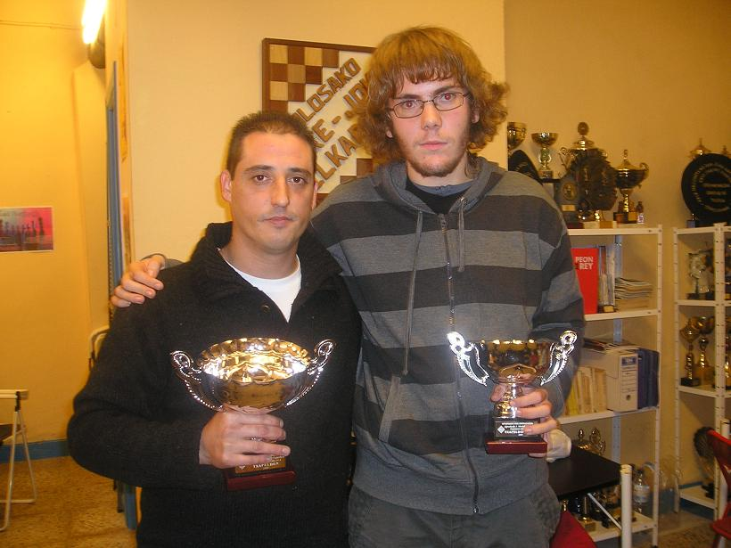

Agustin de Leitza Xake Elkartea |
| » hasiera » elkarteko bazkideak » taldekako txapelketa » azken txapelketak » loturak |
Hirugarren mailako bakarka txapelketa TolosanJoan den asteburuan, urriak 25, hasi zen hirugarren mailako bakarka txapelketa Tolosa-Ibarra taldeak daukan Berdura plazako egoitzan. Gure partetik Urtzi Pérezek jokatzen, gure jokalari berriak jokatzen du bere lehen txapelketa helduekin. Txapelketa 12 jokalariek jokatzen dute adin guztienetakoak eta 5 txanda izango ditu, faboritoa Elo aldetik Billabonako jokalaria David Parrón da.Txapelketaren laburpena (pdf) Partidaren bisoreaBostgarren txanda (azkena) 08-11-22Bukatu da gure jokalariarentzat
oso arraro izand den txapelketa. Urtzik bere bigarren garaipena lortu
du, nahiz eta berriz izan bere aurkaria aurkeztu ez delako, eta berriro
jokalari bera izan da! Hau aparte txapelketa honetan ikusi dugu zer
hobetu eta hori oso garrantzitsua da. Bestaldetik, txapelketa irabazi
du jokalari andoaindarra, nahiz eta Billabonako taldearentzat jokatu,
Miguel Hernándezek.
Txapelduna (ezkerrean) eta txapelkdun-ordea bere sariekin.
Laugarren txanda 08-11-15Gure jokalariak gustuko du puntuak eskuratzea eta gaur berriro egin du, gaurko honetan taulak bakarrik izan badira ere. Bere aurkaria Billabonako jokalari gaztea Aitor Villena izan da, eta oso partida lehiatu bat jokatu dute, biek egin dituzte akatsak eta emaitza zuzena izan da, nahiz eta amaierako posizioan Aitorrek garaipena lortzeko saiakera bat izan, haatik taulak lortzea hiru errepetizioagatik erabaki du.Hirugarren txanda 08-11-08Urtzik bere lehen puntua lortu du, nahiz eta aurkariak aurkeztu ez delako izan. Bestaldetik txapelketak lider bakar bat dauka, Billabona taldeko jokalariak, andoaindar ohia Miguel Hernández.Bigarren txanda 08-11-01Gorabeherako eguna izan du Urtzik. Urtzik jokatu du Tolosako kadete baten aurka, Aimar Intxaurrondo hain zuzen ere, irteera ondo jokatu eta gero Urtzik pieza bat irabazi du, eta gero kalitate bat, beraz orokorrean dorre bat, baina agian bere eskarmentu faltagatik damak tableroan uztea erabaki du, eta hor egon da gakoa, Urtziren erregea babes gabe zegoen eta txuriaren dama jan du ia peoi guztiak, azkenean txuriak sei peoi zituen dorrearen truke eta Urtzik ezin izan du hori defenditu eta galdu egin du. Espero dezagun hurrengo partida, lasaitasun gehiagorekin hartuz gero, emaitza hobetzea. Tolosako joko aretoaren bista.
 Urtzi itxoiten bere aurkaria mugitzeko. Lehen txanda 08-10-25Gure jokalariak eskarmentu falta nabaritu du eta bere lehen partidan nahiko azkar galdu du Joxe Mujikaren aurrean, Tolosa taldeko jokalari indartsua. Espero dezagun hurrengo partidan lasaitasun gehiago edukitzea eta partida hobe bat jokatzea. |